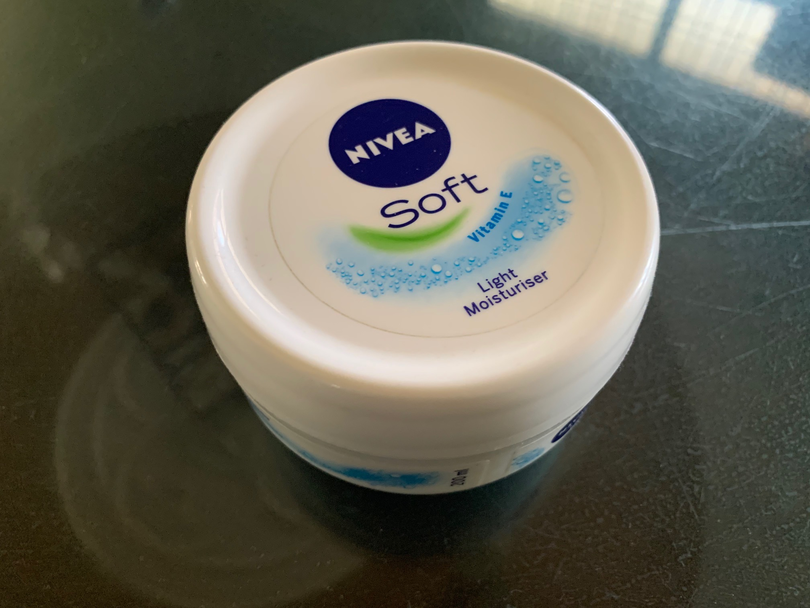
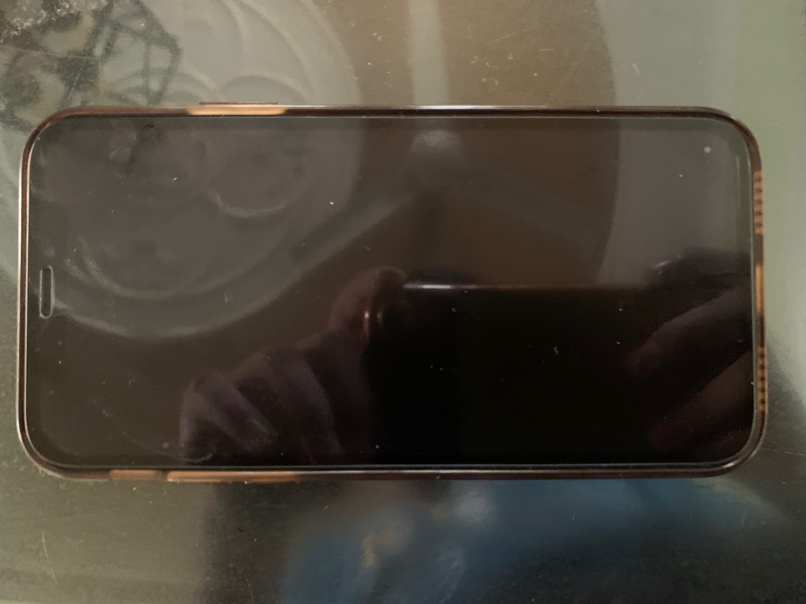
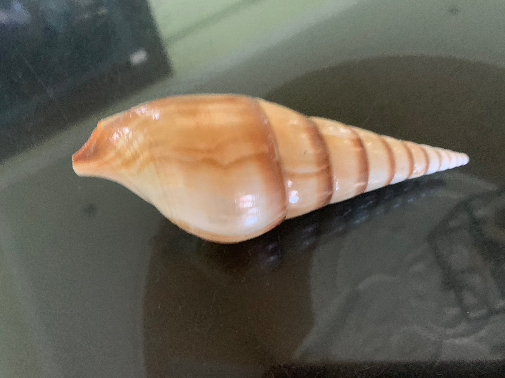
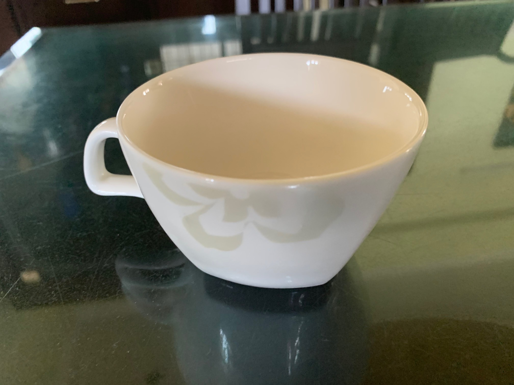

Test Image 1 -
Output on Google Lens Project:
Analog Clock
Output on MobileNet Model:
Analog Clock
Both the MobileNet and Google Lens are correct
Test Image 2 -

Output on Google Lens Project:
Nivea Cream
Output on MobileNet Model:
Spotlight, Spot
Google Lens is more accurate
Test Image 3 -

Output on Google Lens Project:
Phone
Output on MobileNet Model:
Wallet, Billfold, Notecase, Pocketbook
Google Lens is more accurate
Test Image 4 -

Output on Google Lens Project:
-
Output on MobileNet Model:
Snail
None of them are accurate
Test Image 5 -

Output on Google Lens Project:
Utensil
Output on MobileNet Model:
Cup
MobileNet is more accurate
I tested 5 images out of which MobileNet detected 2 correctly and Google Lens detected 3 correctly